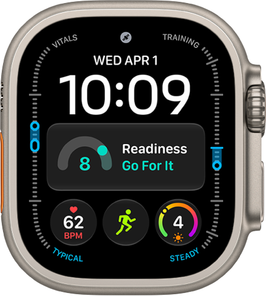

此表盘（在 Apple Watch Ultra 机型上可用）提供七个复杂功能，以及用于调整时间大小和布局的六个选项。表盘中间的大型复杂功能可让你轻松查看重要信息，如指南针朝向或正在运行的秒表。 你可以选取以在外缘（表圈）上显示实时水深或海拔高度数据，或正计时一分钟的秒数。你也可以选取包含生命体征（在左侧外缘）和训练负荷（在右侧外缘）数据的“训练”表圈。
下方的文件数包括本地化资源。固件名称键能确认包的归属；组件的圆屏点击边界、亮屏过渡与 AOD 对照均待设备验证。
原始包 已解析属性表 Mach-O 方法与成员 ARM64 汇编 解出的图集
.strings × 176 .stringsdict × 44 .plist × 3 .car × 1 无扩展名 × 1
原始包 已解析属性表 Mach-O 方法与成员 ARM64 汇编 解出的图集
.strings × 176 .stringsdict × 44 .plist × 3 .car × 1 无扩展名 × 1
原始包 已解析属性表 Mach-O 方法与成员 ARM64 汇编 解出的图集
.strings × 176 .stringsdict × 44 .plist × 3 .car × 1 无扩展名 × 1
NTKFoghornFaceBundle.bundleFACE_STYLE_FOGHORN_DESCRIPTIONdesertsandoliveburgundytranslucentBlacktranslucentGraytranslucentKelpdarkUmberfoghorn.performancefoghorn.adventurerfoghorn.oceanEDIT_OPTION_LABEL_FOGHORN_BEZEL_READINESSEDIT_OPTION_LABEL_FOGHORN_BEZEL_READINESS_COMPANIONEDIT_OPTION_LABEL_FOGHORN_BEZEL_SECONDSEDIT_OPTION_LABEL_FOGHORN_STYLE_DEFAULTEDIT_MODE_LABEL_FOGHORN_BEZELEDIT_OPTION_LABEL_FOGHORN_BEZEL_NONEEDIT_OPTION_LABEL_FOGHORN_BEZEL_DEPTHEDIT_OPTION_LABEL_FOGHORN_STYLE_LARGE_WITH_SECONDSEDIT_MODE_LABEL_FOGHORN_STYLEEDIT_OPTION_LABEL_FOGHORN_STYLE_XLARGE_WITH_SECONDSEDIT_OPTION_LABEL_FOGHORN_BEZEL_ELEVATIONEDIT_OPTION_LABEL_FOGHORN_BEZEL_HARMONIAEDIT_OPTION_LABEL_FOGHORN_STYLE_DEFAULT_WITH_SECONDSEDIT_OPTION_LABEL_FOGHORN_STYLE_XLARGEEDIT_OPTION_LABEL_FOGHORN_STYLE_LARGE色组与设备条件 Foghorn-F2026.color.plist Foghorn.color.plist 共享色组与默认值
-[NTKFoghornFaceView tritium_didTransitionToTritiumOn];-[NTKFoghornFaceView tritium_willBeginRenderingFlipbookContent];-[NTKFoghornFaceView tritium_didTransitionToTritiumOff];-[NTKFoghornFaceView tritium_preferredTransitionToOffAnimation];-[NTKFoghornFaceView tritium_usesWidgetTransitionPresetColors];-[NTKFoghornFaceView tritium_createFaceAnimator];-[NTKFoghornFaceView tritium_alwaysOnTimelines];-[NTKFoghornFaceView tritium_transitionToFrameSpecifier:];-[NTKFoghornFaceView _lowPowerModeEnabled];-[NTKFoghornFaceView setTritiumState:];-[NTKFoghornFaceView _updateColorForTritiumWithProgress:];-[NTKFoghornFaceView _updateBezelForTritiumWithProgress:];-[NTKFoghornFaceView _stopObservingLowPowerMode];-[NTKFoghornFaceView _startObservingLowPowerMode];-[NTKFoghornFaceView _tritium_updateComplicationColors];-[NTKFoghornFaceView tritium_shouldApplyOverrideDate];-[NTKFoghornFaceView tritium_willTransitionToTritiumOnToFrameSpecifier:];-[NTKFoghornFaceView tritium_willTransitionToTritiumOffFromFrameSpecifier:];-[NTKFoghornTimeView tritiumState];-[NTKFoghornTimeView tritium_transitionToTritiumOnWithProgress:];-[NTKFoghornTimeView tritium_alwaysOnTimelines];-[NTKFoghornTimeView tritium_transitionToFrameSpecifier:];-[NTKFoghornTimeView setTritiumState:];-[NTKFoghornTimeView tritium_transitionToTritiumOffWithProgress:];-[NTKFoghornTimeView tritium_willTransitionToTritiumOffFromFrameSpecifier:];-[NTKFoghornTimeView _setLayoutFromStyle:toStyle:fromTritiumOn:toTritiumOn:fromInset:toInset:progress:];-[NTKFoghornTimeView _setLayoutFromTritiumOn:toTritiumOn:progress:];-[NTKFoghornTimeView _stuffForLayoutStyle:inset:tritiumOn:renderRect:oversizedRect:showSeconds:];-[NTKFoghornTimeView _tritiumOff];-[NTKFoghornTimeView _tritiumOn];-[NTKFoghornTimeView _updateHoursMinutesSecondsForTimeFormatter:layoutStyle:tritiumOn:blinkAlpha:];-[NTKFoghornFaceColorPalette secondaryComplicationColor];-[NTKFoghornFaceColorPalette bezelDepthLimitMajorTickColor];-[NTKFoghornFaceColorPalette bezelDepthLimitMedialTickColor];-[NTKFoghornFaceColorPalette bezelDepthLimitMinorTickColor];-[NTKFoghornFaceColorPalette bezelDepthMaxMajorTickColor];-[NTKFoghornFaceColorPalette bezelDepthMaxMedialTickColor];-[NTKFoghornFaceColorPalette bezelDepthMaxMinorTickColor];-[NTKFoghornFaceColorPalette bezelHarmoniaEmphasizedTickColor];-[NTKFoghornFaceColorPalette bezelInactiveMajorTickColor];-[NTKFoghornFaceColorPalette bezelInactiveMedialTickColor];-[NTKFoghornFaceColorPalette bezelInactiveMinorTickColor];-[NTKFoghornFaceColorPalette bezelMajorTickColor];-[NTKFoghornFaceColorPalette bezelMedialTickColor];-[NTKFoghornFaceColorPalette bezelMinorTickColor];-[NTKFoghornFaceColorPalette bezelReadinessEmphasizedTickColor];-[NTKFoghornFaceColorPalette timeMinutesColor];-[NTKFoghornFaceColorPalette timeSecondsColor];+[NTKFoghornFace _secondsInitialDefaultComplicationForSlot:forDevice:];-[NTKFoghornFaceColorPalette secondaryComplicationColor];-[NTKFoghornFaceColorPalette bezelDepthLimitMedialTick_night];-[NTKFoghornFaceColorPalette bezelDepthLimitMajorTickColor];-[NTKFoghornFaceColorPalette bezelDepthLimitMedialTick];-[NTKFoghornFaceColorPalette bezelDepthLimitMedialTickColor];-[NTKFoghornFaceColorPalette bezelDepthLimitMinorTick];-[NTKFoghornFaceColorPalette bezelDepthLimitMinorTickColor];-[NTKFoghornFaceColorPalette bezelDepthLimitMinorTick_night];-[NTKFoghornFaceColorPalette bezelDepthMaxMajorTickColor];-[NTKFoghornFaceColorPalette bezelDepthMaxMedialTick];-[NTKFoghornFaceColorPalette bezelDepthMaxMedialTickColor];-[NTKFoghornFaceColorPalette bezelDepthMaxMedialTick_night];-[NTKFoghornFaceColorPalette bezelDepthMaxMinorTick];-[NTKFoghornFaceColorPalette bezelDepthMaxMinorTickColor];-[NTKFoghornFaceColorPalette bezelDepthMaxMinorTick_night];-[NTKFoghornFaceColorPalette bezelHarmoniaEmphasizedTickColor];-[NTKFoghornFaceColorPalette bezelInactiveMajorTickColor];-[NTKFoghornFaceColorPalette bezelInactiveMedialTickColor];-[NTKFoghornFaceColorPalette bezelInactiveMinorTickColor];-[NTKFoghornFaceColorPalette bezelMajorTickColor];-[NTKFoghornFaceColorPalette bezelMedialTickColor];-[NTKFoghornFaceColorPalette bezelMinorTickColor];-[NTKFoghornFaceColorPalette bezelReadinessEmphasizedTickColor];-[NTKFoghornFaceColorPalette timeMinutesColor];-[NTKFoghornFaceColorPalette timeSecondsColor];-[NTKFoghornFaceView tritium_didTransitionToTritiumOn];-[NTKFoghornFaceView tritium_didTransitionToTritiumOff];-[NTKFoghornFaceView tritium_preferredTransitionToOffAnimation];-[NTKFoghornFaceView tritium_usesWidgetTransitionPresetColors];-[NTKFoghornFaceView _applyTransitionFraction:fromOption:toOption:forCustomEditMode:slot:];-[NTKFoghornFaceView tritium_createFaceAnimator];-[NTKFoghornFaceView tritium_alwaysOnTimelines];-[NTKFoghornFaceView tritium_transitionToFrameSpecifier:];-[NTKFoghornFaceView _applyTransitionFraction:fromNightMode:toNightMode:];-[NTKFoghornFaceView _applyComplicationsAlphaForTransitionFraction:fromLayoutStyle:toLayoutStyle:editMode:];-[NTKFoghornFaceView timeViewLayoutShowsSeconds];-[NTKFoghornFaceView _applyTransitionFraction:fromColor:toColor:];-[NTKFoghornFaceView _cancelNightModeAnimation];-[NTKFoghornFaceView _configureForTransitionFraction:fromEditMode:toEditMode:];-[NTKFoghornFaceView _nightModeInterpolator];-[NTKFoghornFaceView tritium_willTransitionToTritiumOnToFrameSpecifier:];-[NTKFoghornFaceView tritium_willTransitionToTritiumOffFromFrameSpecifier:];-[NTKFoghornPicayuneViewConfiguration minutesColor];-[NTKFoghornPicayuneViewConfiguration secondsColor];-[NTKFoghornPicayuneViewConfiguration setMinutesColor:];-[NTKFoghornPicayuneViewConfiguration setSecondsColor:];-[NTKFoghornSecondsBezelSegment init];-[NTKFoghornSecondsBezelSegment initWithImage:position:];+[NTKFoghornTimeView _configureWithMetricBounds:hoursSize:minutesSeparatorSize:minutesSize:secondsSize:textInset:outlineWidth:hScale:snappingPolicy:forDevice:frameStates:];+[NTKFoghornTimeView _getSizesForHoursString:blinkerString:minutesString:secondsString:font:showSeconds:metricsRect:hoursSize:minutesSeparatorSize:minutesSize:secondsSize:];+[NTKFoghornTimeView _hoursMinutesStringFromTimeFormatter:];+[NTKFoghornTimeView _minutesSeparatorImageWithSize:scale:frame:text:textColor:font:outlineWidth:forDevice:];+[NTKFoghornTimeView _secondsStringFromTimeFormatter:];+[NTKFoghornTimeView _stringsFromTimeFormatter:showSeconds:hoursString:blinkerString:minutesString:secondsString:];+[NTKFoghornTimeView _stuffForLayoutStyle:inset:shouldHideSeconds:layoutConstants:renderRect:oversizedRect:showSeconds:];+[NTKFoghornTimeView drawSnapshotInContext:layoutStyle:inset:minutesColor:secondsColor:forDevice:];-[NTKFoghornTimeView tritium_transitionToTritiumOnWithProgress:];-[NTKFoghornTimeView tritium_alwaysOnTimelines];-[NTKFoghornTimeView tritium_transitionToFrameSpecifier:];-[NTKFoghornTimeView tritium_transitionToTritiumOffWithProgress:];-[NTKFoghornTimeView _updateBlinkerAlphaForSecondFraction:];-[NTKFoghornTimeView setOverrideDate:duration:];-[NTKFoghornTimeView tritium_willTransitionToTritiumOffFromFrameSpecifier:];-[NTKFoghornTimeView animationStyle];-[NTKFoghornTimeView setAnimationStyle:];-[NTKFoghornTimeView _scaleSizeForTimeFormatter:layoutStyle:inset:shouldHideSeconds:];-[NTKFoghornTimeView setShouldShowSecondsInAlwaysOn:];-[NTKFoghornTimeView _getLayoutForHoursString:blinkerString:minutesString:secondsString:showSeconds:numberOfThinCharacters:layoutStyle:inset:metricsRect:];-[NTKFoghornTimeView _getMinutesColor];-[NTKFoghornTimeView _getSecondsColorWithAlpha:];-[NTKFoghornTimeView _layoutAndUpdateForTimeFormatter:showSeconds:layoutStyle:inset:metricsRect:blinkAlpha:secondsAlpha:];-[NTKFoghornTimeView _layoutAndUpdateForTimeFormatter:transitoryFontSize:transitoryFontWeight:metricsRect:snapToPixel:fromLayoutStyle:toLayoutStyle:fromInset:toInset:fromShowSeconds:toShowSeconds:progress:secondsSize:secondsWeight:secondsRenderRect:blinkAlpha:secondsAlpha:];-[NTKFoghornTimeView _layoutForHoursString:blinkerString:minutesString:secondsString:showSeconds:transitoryFontSize:transitoryFontWeight:transitoryOutlineWidth:metricsRect:snapToPixel:toLayoutStyle:font:frameStates:];-[NTKFoghornTimeView _scaleSizeForLayoutStyle:inset:shouldHideSeconds:numberOfThinCharacters:];-[NTKFoghornTimeView _scaleWeightForLayoutStyle:inset:shouldHideSeconds:];-[NTKFoghornTimeView _stuffForLayoutStyle:inset:tritiumOn:renderRect:oversizedRect:showSeconds:];-[NTKFoghornTimeView _updateColorsForElementMask:blinkAlpha:secondsAlpha:];-[NTKFoghornTimeView _updateColorsWithBlinkAlpha:secondsAlpha:];-[NTKFoghornTimeView _updateFrameElementsForHoursString:blinkerString:minutesString:secondsString:blinkAlpha:secondsAlpha:];-[NTKFoghornTimeView _updateHoursMinutesSecondsForTimeFormatter:layoutStyle:tritiumOn:blinkAlpha:];-[NTKFoghornTimeView _updateMinutesSeparatorLayerForTimeFormatter:];-[NTKFoghornTimeView _updateSecondsForTimeFormatter:showSeconds:secondsAlpha:];-[NTKFoghornTimeView _updateShowSeconds];-[NTKFoghornTimeView animationSnapStyle];-[NTKFoghornTimeView hideSecondsDigits];-[NTKFoghornTimeView minutesColor];-[NTKFoghornTimeView secondsColor];-[NTKFoghornTimeView secondsDigitPNGImageForDigit:textColor:forDevice:];-[NTKFoghornTimeView secondsDigitsFrame];-[NTKFoghornTimeView secondsDigitsOrigin];-[NTKFoghornTimeView secondsOutlineWidth];-[NTKFoghornTimeView setAnimationSnapStyle:];-[NTKFoghornTimeView setHideSecondsDigits:];-[NTKFoghornTimeView setMinutesColor:];-[NTKFoghornTimeView setSecondsColor:];-[NTKFoghornTimeView shouldShowSecondsInAlwaysOn];-[NTKFoghornFaceColorPalette simpleTextComplicationColor];-[NTKFoghornFaceColorPalette secondaryComplicationColor];-[NTKFoghornFaceColorPalette primaryComplicationColor];-[NTKFoghornFaceColorPalette bezelHarmoniaTrainingBelowColor];-[NTKFoghornFaceColorPalette bezelHarmoniaTrainingAboveColor];-[NTKFoghornFaceColorPalette bezelReadinessPaceInactiveColor];-[NTKFoghornFaceColorPalette bezelDepthDecorationColor];-[NTKFoghornFaceColorPalette bezelDepthLabelColor];-[NTKFoghornFaceColorPalette bezelDepthLimitLabelColor];-[NTKFoghornFaceColorPalette bezelDepthLimitMajorTickColor];-[NTKFoghornFaceColorPalette bezelDepthLimitMedialTickColor];-[NTKFoghornFaceColorPalette bezelDepthLimitMinorTickColor];-[NTKFoghornFaceColorPalette bezelDepthMarkerColor];-[NTKFoghornFaceColorPalette bezelDepthMaxLabelColor];-[NTKFoghornFaceColorPalette bezelDepthMaxMajorTickColor];-[NTKFoghornFaceColorPalette bezelDepthMaxMarkerColor];-[NTKFoghornFaceColorPalette bezelDepthMaxMedialTickColor];-[NTKFoghornFaceColorPalette bezelDepthMaxMinorTickColor];-[NTKFoghornFaceColorPalette bezelHarmoniaEmphasizedTickColor];-[NTKFoghornFaceColorPalette bezelHarmoniaOvernightBeneficialBlipColor];-[NTKFoghornFaceColorPalette bezelHarmoniaOvernightBeneficialOutlierColor];-[NTKFoghornFaceColorPalette bezelHarmoniaOvernightOutOfRangeColor];-[NTKFoghornFaceColorPalette bezelHarmoniaOvernightPartiallyOutOfRangeColor];-[NTKFoghornFaceColorPalette bezelHarmoniaOvernightTypicalColor];-[NTKFoghornFaceColorPalette bezelHarmoniaTrainingNearColor];-[NTKFoghornFaceColorPalette bezelHarmoniaTrainingWellAboveColor];-[NTKFoghornFaceColorPalette bezelHarmoniaTrainingWellBelowColor];-[NTKFoghornFaceColorPalette bezelHarmoniaUnitLabelColor];-[NTKFoghornFaceColorPalette bezelInactiveMajorTickColor];-[NTKFoghornFaceColorPalette bezelInactiveMedialTickColor];-[NTKFoghornFaceColorPalette bezelInactiveMinorTickColor];-[NTKFoghornFaceColorPalette bezelMajorTickColor];-[NTKFoghornFaceColorPalette bezelMedialTickColor];-[NTKFoghornFaceColorPalette bezelMinorTickColor];-[NTKFoghornFaceColorPalette bezelReadinessEmphasizedTickColor];-[NTKFoghornFaceColorPalette bezelReadinessGoForItColor];-[NTKFoghornFaceColorPalette bezelReadinessGoForItDotColor];-[NTKFoghornFaceColorPalette bezelReadinessGoForItInactiveColor];-[NTKFoghornFaceColorPalette bezelReadinessNegativeColor];-[NTKFoghornFaceColorPalette bezelReadinessPaceColor];-[NTKFoghornFaceColorPalette bezelReadinessPaceDotColor];-[NTKFoghornFaceColorPalette bezelReadinessPositiveColor];-[NTKFoghornFaceColorPalette bezelReadinessReadyColor];-[NTKFoghornFaceColorPalette bezelReadinessReadyDotColor];-[NTKFoghornFaceColorPalette bezelReadinessReadyInactiveColor];-[NTKFoghornFaceColorPalette bezelReadinessRecoverColor];-[NTKFoghornFaceColorPalette bezelReadinessRecoverDotColor];-[NTKFoghornFaceColorPalette bezelReadinessRecoverInactiveColor];-[NTKFoghornFaceColorPalette complicationAccentColor];-[NTKFoghornFaceColorPalette complicationNonAccentColor];-[NTKFoghornFaceColorPalette isMulticolorF];-[NTKFoghornFaceColorPalette isNightModeF];-[NTKFoghornFaceColorPalette nightModeStatusBarColor];-[NTKFoghornFaceColorPalette timeMinutesColor];-[NTKFoghornFaceColorPalette timeSecondsColor];+[NTKFoghornFace _initialDefaultComplicationForSlot:forDevice:];+[NTKFoghornFace _complicationSlotDescriptors];+[NTKFoghornFace _richComplicationSlotsForDevice:];+[NTKFoghornFace _orderedComplicationSlots];+[NTKFoghornFace _defaultSelectedComplicationSlotForDevice:];+[NTKFoghornFace _healthAndNavigationInitialDefaultComplicationForSlot:forDevice:];+[NTKFoghornFace _complicationFontStyleForSlot:];+[NTKFoghornFace _readinessInitialDefaultComplicationForSlot:forDevice:];+[NTKFoghornFace _harmoniaInitialDefaultComplicationForSlot:forDevice:];+[NTKFoghornFace _applyInitialDefaultComplicationsForBezelStyle:toFace:forDevice:];+[NTKFoghornFace _secondsInitialDefaultComplicationForSlot:forDevice:];+[NTKFoghornFace complicationSlots];+[NTKFoghornFace _elevationInitialDefaultComplicationForSlot:forDevice:];+[NTKFoghornFace _depthInitialDefaultComplicationForSlot:forDevice:];-[NTKFoghornFace complicationsColorRenderingUsage];-[NTKFoghornFace _localizedNameForComplicationSlot:];-[NTKFoghornFace _numberOfOptionsForCustomEditMode:slot:];-[NTKFoghornFace _defaultOptionForCustomEditMode:slot:];-[NTKFoghornFace _indexOfOption:forCustomEditMode:slot:];-[NTKFoghornFace _optionAtIndex:forCustomEditMode:slot:];+[NTKFoghornFaceBundle _faceWithBezelStyle:layoutStyle:nightMode:complications:forDevice:];+[NTKFoghornFaceColorPalette _colorFromColor:alpha:];+[NTKFoghornFaceColorPalette _canonicalMonochromePaletteNameForBezelStyle:];+[NTKFoghornFaceColorPalette _colorFromColorSetColor:fallbackRootColor:alpha:];-[NTKFoghornFaceColorPalette configurationDidChange:];-[NTKFoghornFaceColorPalette bezelStyle];-[NTKFoghornFaceColorPalette setBezelStyle:];-[NTKFoghornFaceColorPalette primaryColor];-[NTKFoghornFaceColorPalette identifier];-[NTKFoghornFaceColorPalette simpleTextComplicationColor];-[NTKFoghornFaceColorPalette secondaryComplicationColor];-[NTKFoghornFaceColorPalette isEqual:];-[NTKFoghornFaceColorPalette isNightMode];-[NTKFoghornFaceColorPalette primaryComplicationColor];-[NTKFoghornFaceColorPalette copyWithZone:];-[NTKFoghornFaceColorPalette bezelDepthLimitMedialTick_night];-[NTKFoghornFaceColorPalette bezelHarmoniaTrainingBelowColor];-[NTKFoghornFaceColorPalette bezelHarmoniaTrainingAboveColor];-[NTKFoghornFaceColorPalette bezelReadinessPaceInactiveColor];-[NTKFoghornFaceColorPalette _canonicalMonochromePaletteForBezelStyle:];-[NTKFoghornFaceColorPalette _proxyPalette];-[NTKFoghornFaceColorPalette _redColor];-[NTKFoghornFaceColorPalette _whiteColor];-[NTKFoghornFaceColorPalette bezelDepthDecorationColor];-[NTKFoghornFaceColorPalette bezelDepthLabelColor];-[NTKFoghornFaceColorPalette bezelDepthLimitLabelColor];-[NTKFoghornFaceColorPalette bezelDepthLimitMajorTickColor];-[NTKFoghornFaceColorPalette bezelDepthLimitMedialTick];-[NTKFoghornFaceColorPalette bezelDepthLimitMedialTickColor];-[NTKFoghornFaceColorPalette bezelDepthLimitMinorTick];-[NTKFoghornFaceColorPalette bezelDepthLimitMinorTickColor];-[NTKFoghornFaceColorPalette bezelDepthLimitMinorTick_night];-[NTKFoghornFaceColorPalette bezelDepthMarkerColor];-[NTKFoghornFaceColorPalette bezelDepthMaxLabelColor];-[NTKFoghornFaceColorPalette bezelDepthMaxMajorTickColor];-[NTKFoghornFaceColorPalette bezelDepthMaxMarkerColor];-[NTKFoghornFaceColorPalette bezelDepthMaxMedialTick];-[NTKFoghornFaceColorPalette bezelDepthMaxMedialTickColor];-[NTKFoghornFaceColorPalette bezelDepthMaxMedialTick_night];-[NTKFoghornFaceColorPalette bezelDepthMaxMinorTick];-[NTKFoghornFaceColorPalette bezelDepthMaxMinorTickColor];-[NTKFoghornFaceColorPalette bezelDepthMaxMinorTick_night];-[NTKFoghornFaceColorPalette bezelHarmoniaEmphasizedTickColor];-[NTKFoghornFaceColorPalette bezelHarmoniaOvernightBeneficialBlipColor];-[NTKFoghornFaceColorPalette bezelHarmoniaOvernightBeneficialOutlierColor];-[NTKFoghornFaceColorPalette bezelHarmoniaOvernightOutOfRangeColor];-[NTKFoghornFaceColorPalette bezelHarmoniaOvernightPartiallyOutOfRangeColor];-[NTKFoghornFaceColorPalette bezelHarmoniaOvernightTypicalColor];-[NTKFoghornFaceColorPalette bezelHarmoniaTrainingNearColor];-[NTKFoghornFaceColorPalette bezelHarmoniaTrainingWellAboveColor];-[NTKFoghornFaceColorPalette bezelHarmoniaTrainingWellBelowColor];-[NTKFoghornFaceColorPalette bezelHarmoniaUnitLabelColor];-[NTKFoghornFaceColorPalette bezelInactiveMajorTickColor];-[NTKFoghornFaceColorPalette bezelInactiveMedialTickColor];-[NTKFoghornFaceColorPalette bezelInactiveMinorTickColor];-[NTKFoghornFaceColorPalette bezelMajorTickColor];-[NTKFoghornFaceColorPalette bezelMedialTickColor];-[NTKFoghornFaceColorPalette bezelMinorTickColor];-[NTKFoghornFaceColorPalette bezelReadinessEmphasizedTickColor];-[NTKFoghornFaceColorPalette bezelReadinessGoForItColor];-[NTKFoghornFaceColorPalette bezelReadinessGoForItDotColor];-[NTKFoghornFaceColorPalette bezelReadinessGoForItInactiveColor];-[NTKFoghornFaceColorPalette bezelReadinessNegativeColor];-[NTKFoghornFaceColorPalette bezelReadinessPaceColor];-[NTKFoghornFaceColorPalette bezelReadinessPaceDotColor];-[NTKFoghornFaceColorPalette bezelReadinessPositiveColor];-[NTKFoghornFaceColorPalette bezelReadinessReadyColor];-[NTKFoghornFaceColorPalette bezelReadinessReadyDotColor];-[NTKFoghornFaceColorPalette bezelReadinessReadyInactiveColor];-[NTKFoghornFaceColorPalette bezelReadinessRecoverColor];-[NTKFoghornFaceColorPalette bezelReadinessRecoverDotColor];-[NTKFoghornFaceColorPalette bezelReadinessRecoverInactiveColor];-[NTKFoghornFaceColorPalette complicationAccentColor];-[NTKFoghornFaceColorPalette complicationNonAccentColor];-[NTKFoghornFaceColorPalette isMulticolorF];-[NTKFoghornFaceColorPalette isNightModeF];-[NTKFoghornFaceColorPalette nightModeColorPalette];-[NTKFoghornFaceColorPalette nightModeStatusBarColor];-[NTKFoghornFaceColorPalette timeMinutesColor];-[NTKFoghornFaceColorPalette timeSecondsColor];+[NTKFoghornFaceLayoutStyleEditOption _nameLocalizationKeyForValue:forDevice:];+[NTKFoghornFaceLayoutStyleEditOption _snapshotKeyForValue:forDevice:];+[NTKFoghornFaceLayoutStyleEditOption _orderedValuesForDevice:];+[NTKFoghornFaceLayoutStyleEditOption optionWithLayoutStyle:forDevice:];-[NTKFoghornFaceLayoutStyleEditOption powerLogFaceConfigurationTraits];-[NTKFoghornFaceLayoutStyleEditOption localizedName];-[NTKFoghornFaceLayoutStyleEditOption layoutStyle];-[NTKFoghornFaceLayoutStyleEditOption _valueToFaceBundleStringDict];+[NTKFoghornFaceView _applyComplicationsLayoutForDevice:size:fromBezelStyle:toBezelStyle:progress:block:];+[NTKFoghornFaceView _isSixpackComplicationSlot:];+[NTKFoghornFaceView _applyComplicationsLayoutForDevice:size:circularScale:circularShift:fromTopBottomMargin:fromInterSixpackSpacing:block:];+[NTKFoghornFaceView _isMiddleComplicationSlot:];+[NTKFoghornFaceView _sixpackComplicationNames];-[NTKFoghornFaceView overrideColorForStatusBar];-[NTKFoghornFaceView _keylineCornerRadiusForComplicationSlot:];-[NTKFoghornFaceView _homeScreenDateLabelColor];-[NTKFoghornFaceView _updateStatusBarColorForNightModeFraction:];-[NTKFoghornFaceView _applyPaletteBezelStyle:updateColorsIfNeeded:];-[NTKFoghornFaceView createFaceColorPalette];-[NTKFoghornFaceView _currentLayoutStyle];-[NTKFoghornFaceView _applyComplicationLayoutRuleForDevice:frame:transform:slot:states:];-[NTKFoghornFaceView _applyComplicationsAlphaForLayoutStyle:editMode:];-[NTKFoghornFaceView tritium_usesWidgetTransitionPresetColors];-[NTKFoghornFaceView _applyTransitionFraction:fromOption:toOption:forCustomEditMode:slot:];-[NTKFoghornFaceView _applyBreathingFraction:forCustomEditMode:slot:];-[NTKFoghornFaceView foghornFaceColorPalette];-[NTKFoghornFaceView _updateViewColorsWithPalette:];-[NTKFoghornFaceView _filterProviderForSlot:];-[NTKFoghornFaceView _applyPaletteToComplications:];-[NTKFoghornFaceView _alphaForComplicationSlot:inEditOption:ofEditMode:];-[NTKFoghornFaceView _applyOption:forCustomEditMode:slot:];-[NTKFoghornFaceView _prepareForEditing];-[NTKFoghornFaceView _cleanupAfterEditing];-[NTKFoghornFaceView _updateColorForTritiumWithProgress:];-[NTKFoghornFaceView _applyComplicationsLayoutFromBezelStyle:toBezelStyle:progress:];-[NTKFoghornFaceView _keylineStyleForComplicationSlot:];-[NTKFoghornFaceView _updateViewColorsWithMultiPalette];-[NTKFoghornFaceView _fadesComplicationSlot:inEditMode:];-[NTKFoghornFaceView _applyComplicationsAlphaForTransitionFraction:fromLayoutStyle:toLayoutStyle:editMode:];-[NTKFoghornFaceView _applyComplicationColor:withPalette:slot:];-[NTKFoghornFaceView _complicationSlotsHiddenByCurrentConfiguration];-[NTKFoghornFaceView _applyPaletteFromBezelStyle:toBezelStyle:progress:updateColorsIfNeeded:];-[NTKFoghornFaceView timeViewLayoutShowsSeconds];-[NTKFoghornFaceView _configureComplicationView:forSlot:];-[NTKFoghornFaceView _loadLayoutRules];-[NTKFoghornFaceView _newLegacyViewForComplication:family:slot:];-[NTKFoghornFaceView _applyTransitionFraction:fromColor:toColor:];-[NTKFoghornFaceView _applyComplicationFont:];-[NTKFoghornFaceView _applyComplicationsLayoutForComplicationsEditing];-[NTKFoghornFaceView _prepareComplicationsForSnapshotting];-[NTKFoghornFaceView _fixLayoutStyle];-[NTKFoghornFaceView _applyComplicationsLayoutCircularScale:circularShift:fromTopBottomMargin:fromInterSixpackSpacing:states:];-[NTKFoghornFaceView _tritium_updateComplicationColors];-[NTKFoghornFaceView _applyMultiPaletteFractions];-[NTKFoghornFaceView _applyRubberBandingFraction:forCustomEditMode:slot:];-[NTKFoghornFaceView _multiPalette];-[NTKFoghornPicayuneView layoutSubviews];-[NTKFoghornPicayuneViewConfiguration setLayoutStyle:];-[NTKFoghornPicayuneViewConfiguration layoutStyle];-[NTKFoghornPicayuneViewConfiguration minutesColor];-[NTKFoghornPicayuneViewConfiguration secondsColor];-[NTKFoghornPicayuneViewConfiguration setMinutesColor:];-[NTKFoghornPicayuneViewConfiguration setSecondsColor:];+[NTKFoghornTimeView _CTFrameForFrame:text:textColor:font:forDevice:];+[NTKFoghornTimeView _minutesSeparatorImageWithSize:scale:frame:text:textColor:font:outlineWidth:forDevice:];+[NTKFoghornTimeView _stuffForLayoutStyle:inset:shouldHideSeconds:layoutConstants:renderRect:oversizedRect:showSeconds:];+[NTKFoghornTimeView drawSnapshotInContext:layoutStyle:inset:minutesColor:secondsColor:forDevice:];-[NTKFoghornTimeView setLayoutStyle:];-[NTKFoghornTimeView layoutStyle];-[NTKFoghornTimeView _scaleSizeForTimeFormatter:layoutStyle:inset:shouldHideSeconds:];-[NTKFoghornTimeView initWithFrame:forDevice:layout:];-[NTKFoghornTimeView _getLayoutForHoursString:blinkerString:minutesString:secondsString:showSeconds:numberOfThinCharacters:layoutStyle:inset:metricsRect:];-[NTKFoghornTimeView _getMinutesColor];-[NTKFoghornTimeView _getSecondsColorWithAlpha:];-[NTKFoghornTimeView _layoutAndUpdateForTimeFormatter:showSeconds:layoutStyle:inset:metricsRect:blinkAlpha:secondsAlpha:];-[NTKFoghornTimeView _layoutAndUpdateForTimeFormatter:transitoryFontSize:transitoryFontWeight:metricsRect:snapToPixel:fromLayoutStyle:toLayoutStyle:fromInset:toInset:fromShowSeconds:toShowSeconds:progress:secondsSize:secondsWeight:secondsRenderRect:blinkAlpha:secondsAlpha:];-[NTKFoghornTimeView _layoutForHoursString:blinkerString:minutesString:secondsString:showSeconds:transitoryFontSize:transitoryFontWeight:transitoryOutlineWidth:metricsRect:snapToPixel:toLayoutStyle:font:frameStates:];-[NTKFoghornTimeView _scaleSizeForLayoutStyle:inset:shouldHideSeconds:numberOfThinCharacters:];-[NTKFoghornTimeView _scaleWeightForLayoutStyle:inset:shouldHideSeconds:];-[NTKFoghornTimeView _setLayoutFromStyle:toStyle:fromTritiumOn:toTritiumOn:fromInset:toInset:progress:];-[NTKFoghornTimeView _setLayoutFromTritiumOn:toTritiumOn:progress:];-[NTKFoghornTimeView _stuffForLayoutStyle:inset:tritiumOn:renderRect:oversizedRect:showSeconds:];-[NTKFoghornTimeView _updateColorsForElementMask:blinkAlpha:secondsAlpha:];-[NTKFoghornTimeView _updateColorsWithBlinkAlpha:secondsAlpha:];-[NTKFoghornTimeView _updateFrameElement:frame:text:textColor:];-[NTKFoghornTimeView _updateHoursMinutesSecondsForTimeFormatter:layoutStyle:tritiumOn:blinkAlpha:];-[NTKFoghornTimeView initWithFrame:forDevice:clockTimer:layout:];-[NTKFoghornTimeView minutesColor];-[NTKFoghornTimeView secondsColor];-[NTKFoghornTimeView secondsDigitPNGImageForDigit:textColor:forDevice:];-[NTKFoghornTimeView setLayoutFromStyle:toStyle:progress:];-[NTKFoghornTimeView setMinutesColor:];-[NTKFoghornTimeView setSecondsColor:];+[NTKFoghornFaceBezelView drawSnapshotInContext:bezelStyle:colorPalette:forDevice:];-[NTKFoghornFaceBezelView setColorPalette:];